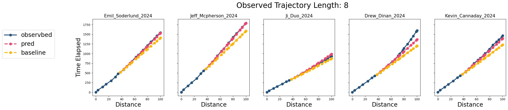

2025 Western States 100
👋 Introduction
At 5:00 a.m. PT on June 28th, 2025, 369 lucky runners will start the Western States 100, one of American ultrarunning’s most iconic races. The 100.2-mile (161 km) course winds from Olympic Valley, near Palisades Tahoe, to a high school track in Auburn, California.
The race has made legends ‚Äî and broken hearts. Entry comes via a lottery system or a coveted ‚ÄúGolden Ticket‚Äù that has to be won from fiercely competitive qualifiers. The race has inspired numerous documentaries, including the classic “Unbreakable”, which chronicles the dramatic 2010 edition.
This year looks stacked: 2010 stars are returning, Killian Jornet is back, and a deep elite field is set for a thrilling showdown.
🎯 Task
While I won’t be there to run the race (I’d struggle to make it even halfway) ‚Äî I still wanted to get in on the action somehow. Thinking more about it, I wanted to see if there was a way to build some form of forecasting model; more specifically, given a runner’s times at the previous aid stations, can we predict the time to a future distance (e.g., the next aid station)?
Now, during most races, they often present an estimated finish time, which is usually a prediction based on the current pace ‚Äî that is, it answers the question: “If the runner kept on going at the same pace, when would they finish?”. This is not what I wanted to build. I wanted something that takes in the full context of a runner’s journey. Perhaps being fast on a certain uphill segment or slowing down over a certain part of the course is highly informative of how you will perform on much later segments; this is not captured in the linear interpolation of pace.
I have no idea what those “indicators of later performance” might be, but in theory, we should be able to learn them from the data. So, I decided to find out if this was possible. That is, my goal became: to build a forecasting model specifically designed for Western States predictions.
👇 Execution
🔧 Data curation
I started by downloading the splits from the official WSE (Western States Endurance) page. This data required some curation that involved harmonizing the aid station names, filtering the data, cleaning up, and formatting in the data. In the end, I ended up with a pretty neat dataset of 2271 runs between 2017-2024.
Note: some technical jargong, I’m going to refer to an individual run (e.g., Person X’s run in 2016) as a trajectory. Visualizing all of these together was a mess, but here are 20 randomly sampled trajectories:
Another way to visualize the full dataset is in a heatmap style, where the intensity corresponds to how much time that have elapsed; if we sort the trajectories by finish time, we end up with a pretty nice visualization (white means no time was registered at the corresponding aid station):
You can see how the intensity increases from the top left corner (fastest runner, first aid station) with a diagonal gradient towards the bottom right corner (slowest runner, last aid station).
This is the dataset I set out to work with.
🤖 Model
With a dataset this small, I wanted to do something very simple, so I decided to test a classic RNN. I’m not claiming this to be the best solution‚Äîit’s just one attempt.
To describe trajectory \( i \), we let \( x_s^i \) denote the distance at aid station \( s \), and \( y_s^i(x_s) \) the elapsed time at the same aid station. The full trajectory is then:
$$ \textrm{trajectory}_i = \{(x_s, y^i(x_s))\}_{s=0}^{s=S} = \mathbf{r}_i(S) $$While the true trajectory is continuous, we treat it as discrete observations because we only have access to elapsed time at the aid stations (no continuous measurements).
The model I settled on is physics-informed and really does nothing more advanced than correcting a simple model. This simple model predicts the time to a given aid station using the average pace at the last aid station multiplied by the distance to the target (middle school math for the win). The correction is an additive term learned by an RNN, which adjusts the linear prediction. In essence, the physics-informed model can be described as:
$$\textrm{predicted time} = \textrm{last time} + \textrm{average pace}\cdot \textrm{distance} + \textrm{RNN adjustment}$$or mathematically:
$$y^i(x_{s'}) = y^i(x_{s'-1}) + \frac{y(x_{s'-1})}{x_{s'-1}} \cdot (x_{s'} - x_{s'-1} ) + a^i_{s'} $$$$ a^i_{s'} = \textrm{MLP}(h^i_{s'-k}, x_{s'}), \qquad h^i_{s'-k} = \textrm{GRU}(\mathbf{r}_i(s'-k)) $$Here, \( s' \) is the aid station we want to predict the time for, and \( k \) represents the number of aid stations before \( s' \) where we have our latest observation. For example, if we know a runner‚Äôs position at the third-to-last aid station and want to predict their time at the finish, we’d let \( k = 3 \). As you can see, the RNN adjustment term is informed by all of the observed trajectory.
\( \textrm{GRU} \) is a gated recurrent unit. The GRU layer essentially consists of two gates: the update gate and the reset gate — the former controls how much of the past state to keep, and the latter how much should be forgotten. GRUs have been around since 2014, but I think they are quite clever and that merits a more elaborate description. A GRU layer can be described as follows for some input $x_s$:
$$z_s = \sigma(W_z x_s + U_zh_{s-1} + b_z)$$$$q_s = \sigma(W_q x_s + U_q h_{s-1} + b_q)$$$$\hat{h}_s = \textrm{tanh}(W_h x_s + U_h(q_s \odot h_{s-1} ) + b_h)$$$$h_s = (1-z_s) \odot h_{s-1} + z_s \odot \hat{h}_s$$Where $\sigma$ is the sigmoid function, $z_s$ is the update gate vector, and $q_s$ is the reset gate vector. In short, if $z_s \mapsto 1$ we keep most of the candidate state $\hat{h}_s$, and vice versa. Similarly, if $q_s \mapsto 0$ the old state ($h_{s-1}$) is not influencing the candidate state at all.
As for the \( \textrm{MLP} \), I designed it as follows:
$$ \text{MLP} = \text{Softplus} \circ \text{BayesLinear} \circ \text{ReLU} \circ \text{Linear} $$I used Softplus to ensure strictly positive outputs (time on course cannot decrease); after some experimentation, it seems like this was a key design element. The other unusual element might be the \( \textrm{BayesLinear} \) layer, which initially was included because I was interested in estimating model uncertainty, but it actually proved more useful in helping to regularize the model. The input to the MLP layer is the hidden state from the GRU layer ($h^i_{s'-k}$), the distance of the last aid station in the observed trajectory ($x_{s'-k}$), and the distance of the aid station we seek to predict the time for ($x_{s'}$).
The reason I didn’t work with fixed distances (e.g., aid stations), was because I wanted to be able to predict the time to any distance.
Note: This was not the first model I tried, but it was the one that worked best.
🔱 Training Splits
I decided to create train/validation/test splits based on the years. This should allow us to evaluate robustness to distribution shifts (e.g., warm weather, better shoes, better fueling strategies, etc.). These were the sets I came up with:
- Training set: 2016, 2018, 2019, 2021, 2023
- Validation set: 2017, 2022
- Test set: 2024
The logic? One earlier year (2016) and one later year (2022) for the validation, and the most recent year for test set - to evaluate the ability to forecast future races.
⚡ Training
During training, I randomly sampled a (cutoff, target) pair for each trajectory. The cutoff determines how much of the trajectory the model sees; the target is the aid station to predict elapsed time for.
I used a simple MSE loss on the predicted time. After some experimenting, I settled on a straightforward setup:
- Optimizer: Adam
- Scheduler: CosineAnnealing
Everything was monitored with TensorboardX.
🚀 Results
Baseline: For comparison, I implemented a baseline that computes a weighted average of the observed paces, where the weights are the inverse squared distance to the target aid station. It‚Äôs essentially the same type of physics-informed model as the RNN-model is based on, but uses the full trajectory up to the last observed point ‚Äî rather than just the most recent observation. To me this is a relevant baseline to compare against: it’s cheap (computationally) and similar to what currently seems to be used in race time prediction.
📉 Losses
The model seemed to converge nicely, eventually hitting a plateau. Sampling (cutoff, target) pairs on the fly (dark curve ) was a bit less stable than fixing them (orange curve), but I prefer this—it acts as a form of augmentation.
👓 Visual Inspection
The very first thing I wanted to do was to inspect some of the predicted trajectories to see if they made any sense. Here’s an excerpt where we predict the trajectory from the 5th, 8th, and 12th aid station.
Prediction from the 5th aid station:
Prediction from the 8th aid station. 
Prediction from the 12th aid station.
Important, this is all on 2024 data - the test set, which the model has never seen. My conclusion from this was that the results were not overly impressive, but not terribly bad either.
However, visual inspections can be deceiving so I wanted something more quantitative.
🧮 Quantitative evaluation
For the quantitative evaluation I compared the RNN-based model against the baseline by looking at the relative absolute error for each predicted step, given a certain observed trajectory length. The picture below shows such an analysis when the observed trajectory is up-until the 11th aid station.
The results you see in this plot was quite representative for the analysis at any step, where the RNN-based model does better the further away we’re trying to forecast. I found this somewhat promising. From this “investigation” it seems as if the RNN-based model beats the baseline model in most instances (but definitely not all).
🔮 Future Directions
This is not a research paper, so I don’t have to pretend I intend to follow up too much on this; but there were a few things that struck me as interesting to actually try at some point:
- Using year metadata - it would be interesting to try and condition the model on things like temperature etc. A warm year likely has different running dynamics than a cool year.
- Using runner metadata - if one could pull Strava logs or even information from races during the year leading up to the race for each runner and integrate it. I’d be curious to see whether this would result in a significant boost in performance.
- Generalize - currently this model only works on this particular course, but perhaps one could pull more data from other races and provide a course profile as input to make it adapt to any race.
🤔 Concluding Remarks (a.k.a. ramblings)
This was a fun project that I thoroughly enjoyed working on – probably because it intersects two of my main interests: machine learning and running. The most annoying part was curating and harmonizing the data, but that’s no surprise.
I have not yet uploaded the code or data, but there’s a 30-50% chance of me doing it. If so, I’ll update the blog post.